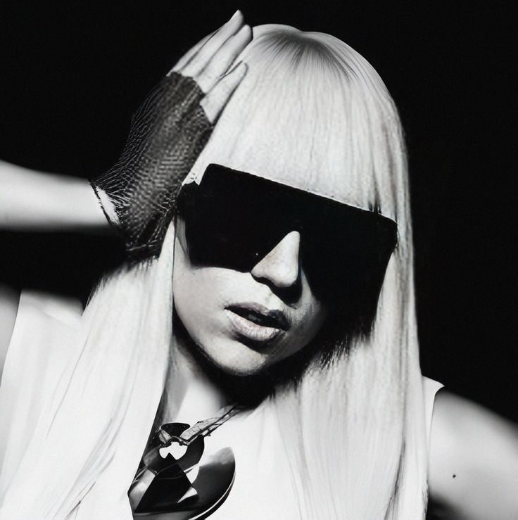

Lady Gaga chamou a atenção dos fãs ao submeter uma faixa ligada à série Wandinha para consideração nas indicações do Emmy 2026.
A notícia aumentou ainda mais a expectativa do público, já que a artista vem expandindo sua presença no universo audiovisual, unindo música e atuação em grandes produções.
Caso seja indicada, Lady Gaga poderá adicionar mais um importante reconhecimento à sua carreira, marcada por sucessos na música, cinema e televisão.